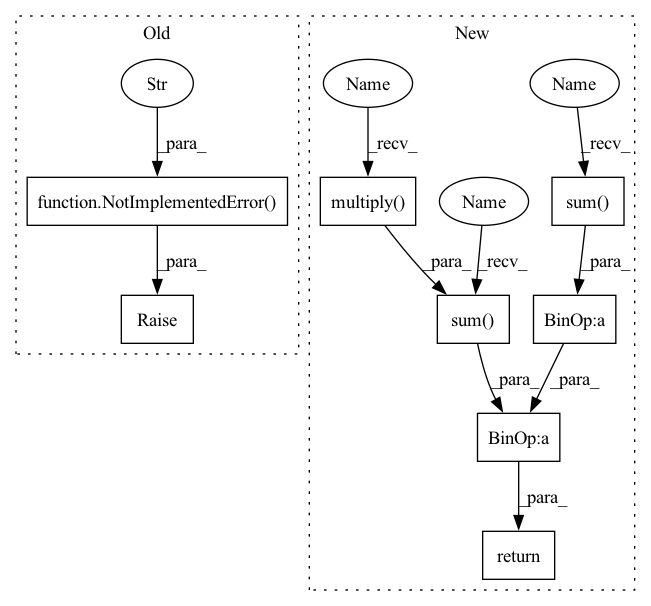

Pattern ID :7869
Before Change
raise NotImplementedError("Not Implemented." )
def iou_coe(output, target, threshold=0.5, axis=(1, 2, 3), smooth=1e-5):
Non-differentiable Intersection over Union (IoU) for comparing theAfter Change
output = _cast(output, threshold)
target = _cast(target, threshold)
inse = torch.sum(torch .multiply( output, target), dim=axis)
l = torch.sum( output, dim=axis)
r = torch.sum(target, dim=axis)
hard_dice = (2. * inse + smooth) / (l + r + smooth)
hard_dice = torch.mean(hard_dice)
return hard_dice
def iou_coe(output, target, threshold=0.5, axis=(1, 2, 3), smooth=1e-5):In pattern: SUPERPATTERN
Frequency: 3
Non-data size: 8
Instances Fragment ID: 28051181
Project Name: tensorlayer/tensorlayerx
Commit Name: 21bf2328ccadff5a24520c774d17bfd6d5e05fa4
Time: 2022-01-26
Author: laicheng_vip@163.com
File Name: tensorlayerx/losses/torch_cost.py
M Class Name: AnonimousClass
N Class Name: AnonimousClass
M Method Name: dice_hard_coe(5)
N Method Name: dice_hard_coe(5)
M Parent Class:
N Parent Class:
M File Name: tensorlayerx/losses/torch_cost.py
N File Name: tensorlayerx/losses/torch_cost.py
M Start Line: 223
M End Line: 223
N Start Line: 227
N End Line: 234
Before Change
raise NotImplementedError("Not Implemented." )
def sequence_loss_by_example(
logits, targets, weights, average_across_timesteps=True, softmax_loss_function=None, name=NoneAfter Change
pre = _cast(output, threshold)
truth = _cast(target, threshold)
inse = torch.sum( torch.multiply( pre, truth), dim=axis)
union = torch.sum( _cast(torch.add(pre, truth) , 1.0, flag=True), dim=axis)
batch_iou = (inse + smooth) / (union + smooth)
iou = torch.mean(batch_iou)
return iou
def sequence_loss_by_example( Fragment ID: 28051176
Project Name: tensorlayer/tensorlayerx
Commit Name: 21bf2328ccadff5a24520c774d17bfd6d5e05fa4
Time: 2022-01-26
Author: laicheng_vip@163.com
File Name: tensorlayerx/losses/torch_cost.py
M Class Name: AnonimousClass
N Class Name: AnonimousClass
M Method Name: iou_coe(5)
N Method Name: iou_coe(5)
M Parent Class:
N Parent Class:
M File Name: tensorlayerx/losses/torch_cost.py
N File Name: tensorlayerx/losses/torch_cost.py
M Start Line: 250
M End Line: 250
N Start Line: 261
N End Line: 267
Before Change
raise NotImplementedError("Not Implemented." )
// Regularization Functions
def li_regularizer(scale, scope=None):After Change
return torch.sum( torch.multiply( v1, v2) , 1) / \
(torch.sqrt(torch.sum(torch.multiply(v1, v1), 1)) *
torch.sqrt(torch.sum( torch.multiply(v2, v2), 1) ))
// Regularization Functions Fragment ID: 28051179
Project Name: tensorlayer/tensorlayerx
Commit Name: 21bf2328ccadff5a24520c774d17bfd6d5e05fa4
Time: 2022-01-26
Author: laicheng_vip@163.com
File Name: tensorlayerx/losses/torch_cost.py
M Class Name: AnonimousClass
N Class Name: AnonimousClass
M Method Name: cosine_similarity(2)
N Method Name: cosine_similarity(2)
M Parent Class:
N Parent Class:
M File Name: tensorlayerx/losses/torch_cost.py
N File Name: tensorlayerx/losses/torch_cost.py
M Start Line: 378
M End Line: 378
N Start Line: 395
N End Line: 397
Before Change
raise NotImplementedError("Not Implemented." )
def iou_coe(output, target, threshold=0.5, axis=(1, 2, 3), smooth=1e-5):
Non-differentiable Intersection over Union (IoU) for comparing theAfter Change
output = _cast(output, threshold)
target = _cast(target, threshold)
inse = torch.sum( torch.multiply( output, target), dim=axis)
l = torch.sum(output, dim=axis)
r = torch.sum( target, dim=axis)
hard_dice = (2. * inse + smooth) / (l + r + smooth)
hard_dice = torch.mean(hard_dice)
return hard_dice
def iou_coe(output, target, threshold=0.5, axis=(1, 2, 3), smooth=1e-5): Fragment ID: 28051188
Project Name: tensorlayer/tensorlayerx
Commit Name: 21bf2328ccadff5a24520c774d17bfd6d5e05fa4
Time: 2022-01-26
Author: laicheng_vip@163.com
File Name: tensorlayerx/losses/torch_cost.py
M Class Name: AnonimousClass
N Class Name: AnonimousClass
M Method Name: dice_hard_coe(5)
N Method Name: dice_hard_coe(5)
M Parent Class:
N Parent Class:
M File Name: tensorlayerx/losses/torch_cost.py
N File Name: tensorlayerx/losses/torch_cost.py
M Start Line: 223
M End Line: 223
N Start Line: 227
N End Line: 234